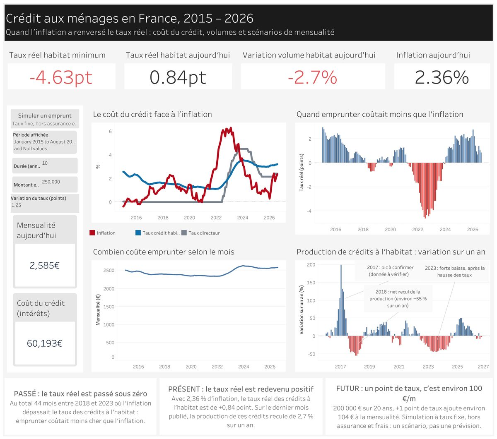

Crédit, taux et inflation en France

Pipeline de bout en bout sur des données publiques BCE et INSEE : collecte par API, entrepôt BigQuery, transformations dbt (staging → marts) et tableau de bord Tableau Public.
30 tests dbt lancés à chaque push par GitHub Actions.
Python · SQL · BigQuery · dbt · Docker · GitHub Actions · Tableau
Code
Dashboard
Assistant Code du travail (RAG)
QuestionModérationRecherche ChromaDBLLM GroqRéponse citée
Chatbot qui répond aux questions sur les congés payés et la durée du travail en s'appuyant sur les articles du Code du travail récupérés via l'API Légifrance, avec citation des articles.
RAG sans framework : base vectorielle ChromaDB, embeddings multilingues, agent modérateur contre l'injection de prompt (sortie JSON stricte).
Python · ChromaDB · sentence-transformers · Groq (Llama 3.3)
Code
MLOps : qualité du vin
push featureEntraînementpush developBuild DockerPublication GHCR
Modèle de classification (Random Forest) servi par une API FastAPI, conteneurisé avec Docker, entraînement et livraison automatisés.
Deux workflows GitHub Actions : entraînement à chaque push sur une branche feature, puis entraînement, build et publication de l'image Docker sur GitHub Container Registry à chaque push sur develop.
Python · scikit-learn · FastAPI · Docker · GitHub Actions
Code